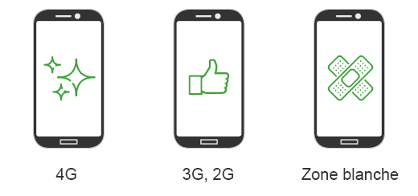

Dans cet article, nous vous expliquons les enjeux et les problématiques d’énergie et de performance de vos applications mobiles, et comment les détecter avant vos utilisateurs.
Performance et énergie, critères primordiaux pour les applications mobiles
La performance d’une solution numérique est un critère important pour les utilisateurs.
Sans performance, les utilisateurs seront critiques et dans le pire des cas n’utiliseront plus le service. Ce facteur s’est renforcé avec la mobilité, compte-tenu des plateformes moins puissantes et des réseaux avec des caractéristiques inégales. À cela s’est ajoutée la problématique de l’énergie. En effet, il est rare que les plateformes mobiles soient alimentées en continu !
Détection trop tardive des problèmes d’énergie et de performance
Avant l’arrivée des smartphones, le respect d’exigence de performance s’était principalement focalisé via des tests de charge côté serveur. Les équipes ont continué cette démarche en ajoutant quelques tests de performance sur des émulateurs ou sur leurs propres téléphones.
Cette démarche permet de détecter quelques problèmes de performance mais est cependant limitée. D’une part, les connexions réseau et les appareils des équipes de développement sont généralement d’un bon niveau et pas assez représentatifs de ceux des utilisateurs finaux ; d’autre part, la problématique d’énergie n’est jamais prise en compte. En effet, les tests s’effectuent sur des connexions Wi-fi avec fibre optique et un émulateur tournant sur un poste de développeur puissant. Très loin d’une connexion 2G sur un téléphone reconditionné.
Au final, la solution passe le cap des recettes pour la mise en production mais les retours du terrain sont nombreux. On peut anticiper cela avec les outils de Real User Monitoring, cependant le coût d’analyse des problèmes et de correction est élevé (et ne prend pas en compte les problématiques d’énergie).
Détecter les problèmes avant la mise en production
Afin d’améliorer son service numérique mobile, il est donc nécessaire de détecter le maximum de problèmes avant la mise en production. Et c’est possible en appliquant une stratégie de test structurée et ciblée qui sera exécutée sur des téléphones de test.
Il est tout d’abord nécessaire d’identifier les types d’usage principaux de l’application. Il ne faut pas écarter la possibilité de faire des tests sous excuses de la fragmentation de l’usage. Il faut pour cela simplement identifier 2 ou 3 types d’utilisateur : utilisateur avec téléphone dernier cri et connexion 4G, utilisateur en mobilité avec téléphone moyenne gamme, utilisateur en zone blanche avec téléphone reconditionné. Cela permet de mettre en place les plateformes sur lesquelles vous allez tester (ici 3 types de téléphones) ainsi que les connexions (Wi-fi, 3G, 2G).

Ensuite il n’est pas nécessaire de mettre en place des tests qui couvrent 100% de vos fonctionnalités. L’idée est plutôt de contrôler que l’usage principal de l’application répond bien à des critères acceptables de performance et de consommation d’énergie, et cela dans tous les paramètres d’exécutions que vous avez définis (Plateforme et connexion).
La détection avant la mise en production dans GREENSPECTOR
Les utilisateurs de GREENSPECTOR appliquent cette stratégie via l’usage de certaines fonctionnalités :
- Tests sur des téléphones réels de différentes générations
- Intégration des tests automatisés ou lancement de tests manuels
- Modification des moyens de connexion des devices (Wifi, 2G…)
- Mesure de la performance et de l’énergie de chaque fonctionnalité de l’application
Au final, avant chaque mise en production (voire plus régulièrement), l’exécution des campagnes de tests ciblés sur des mobiles réels permet de détecter les principales problématiques d’énergie et de performance.